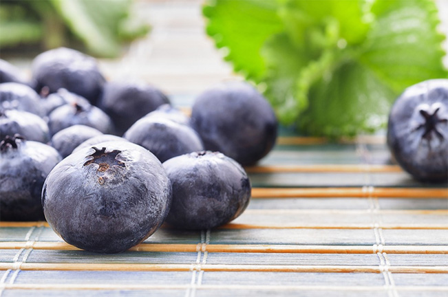

Черника

Биологические характеристики цветка
- Цветок черники (высокого кустарника = Vacciniumcorymbosum, V. ashei, низкого кустарника = V. angustifolium, V.myrtilloides) имеет форму колокольчика, является двуполым и самоопыляющимся.
- Цветок выделяет нектар.
- Пестик выступает над венчиком, таким образом, возможно как самоопыление, так и перекрестное опыление. В ряде случаев перекрестное опыление пыльцой другого сорта черники дает более эффективный результат.
- Собирающие пыльцу шмели проникают в цветок, закрепляясь на нем лапками снизу. Они охватывают челюстями ободок венчика цветка и заставляют цветок вибрировать, приводя в движение летательные мышцы (при этом не расправляя крылья). Это называется вибрационным опылением. Изменение окраски ободка колокольчика свидетельствует о посещении цветка шмелем.
Улей NATUPOL
- Благодаря обильному выделению нектара цветами черники ульи обеспечиваются небольшим количеством медовой подкормки.
- Улей TRIPOL используют для опыления культур незащищенного грунта. Он представляет собой гофрированную пластиковую коробку с теплоизоляцией, которая вмещает три семьи. TRIPOL обеспечивает оптимальное расположение и надежное размещение семей естественных условиях.
Предварительные инструкции
- Для культур незащищенного грунта необходимо 2-3 улья TRIPOL на гектар угодий при отсутствии других способов опыления.
- При доставке один улей TRIPOL содержит 350-400 рабочих шмелей. Продолжительность работы семьи составляет от 6 до 8 недель.
- Для опыления черники в теплице используются эусоциальные (общественные) колонии шмелей: 1 улей покрывает 750 м² площади.
- Для меньшей площади ваш консультант порекомендует вам другой тип улья.
Инструкции по применению
- Разместите улей на высоте 0.5-1 м над землей в месте, защищенном от солнца и конденсата/осадков. Зимой желательно выбрать место под солнцем. Не размещайте улей на лиственном покрове!
- TRIPOL устанавливают на прочной опоре на высоте 50 см от уровня грунта, весной в освещенном месте. Позже, в сезон улей помещают в тень.
- Предохраняйте улей от муравьев.
- Как только ульи установлены на месте, дайте возможность семье успокоиться (1/2 – 1 час) прежде, чем открывать леток.
- При размещении растений в теплицах или туннельных укрытиях летки улья можно открыть, только когда вентиляционные окна закрыты (обычно в конце дня). Это предотвратит вылет шмелей из теплицы, после чего они могут не вернуться в улей.
- Сразу после облета теплицы шмели начинают работу по опылению растений.
- Как правило, шмели наиболее активны утром и днем. Их активность также зависит от сроков цветения растения.
- Шмели активны при температуре от 15 до 30º С. Оптимальным температурным режимом для них является показатель от 15 до 25º С.
Защита растений
- Совместное использование шмелей и естественных врагов (биоагентов) не является проблемой.
- Сельскохозяйственные химикаты могут оказывать прямое и косвенное воздействие на шмелей. При прямом воздействии рабочие шмели и личинки умирают в результате контакта или переваривания химического вещества. При косвенном воздействия запах обработанного химикатами цветка отпугивает шмелей, и они прекращают посещение данного растения.
- Детальная информация об устойчивости и совместимости пестицидов со шмелями, а также многие другие полезные советы размещены на сайте компании Копперт в разделе о побочных эффектах.
- Перед обработкой растений необходимо осуществить сбор шмелей в улей с помощью системы BEEHOME, которая обеспечивает только прилет шмелей в улей и препятствует их вылету. Приблизительно через час все летки улья должны быть полностью закрыты. Таким образом, улей закрывают или удаляют из теплицы.
- При временном удалении улья из теплицы температурный режим его хранения должен составлять 18-20º С.